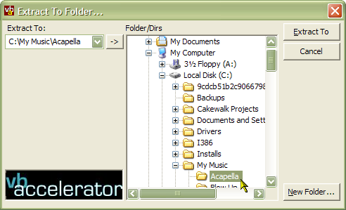

VB5 Folder Browser (50K)
VB5 Folder Browser (50K)
 VB6 Folder Browser (43K)
VB6 Folder Browser (43K)
 16 Dec 2002
16 Dec 2002
Added VB6 version
 IShellFolder Extended Type Library Version 1.2 (ISHF_Ex.Tlb)
IShellFolder Extended Type Library Version 1.2 (ISHF_Ex.Tlb)

Browsing For Folders
Controllable Folder Browsing, including a method for creating a WinZip style Extract Dialog Box.
The Folder Browse Dialog is the missing dialog in VB - it can't be called from a run-time function and it is missing from the Common Dialog OCX as well. Whilst a number of code samples demonstrate that calling this dialog is simple, many ignore the most important feature: the ability to initialise the folder browse dialog to the user's previously selected folder or to some default.
This librbary also offers the ability to capture the Browse for Folder dialog into your own VB form and respond to browse events such as folder change.
About The Browse For Folder Dialog
The implementation of the Dialog is provided in vbalFlBr.DLL (VB5) or vbalFlBr6.DLL (VB6), which you will find under "vbAccelerator Folder Browse Library" in the references box once the object has been registered.
Two classes and one interface are exposed by the library. cBrowseForFolder is the class you will normally use to display a folder-browse dialog. cCaptureBF and iCaptureBF provide additional code wrappers allowing you to capture a folder browser into your own forms and further customise the appearance. These will be covered in turn.
cBrowseForFolder
This class exposes the standard Browse for folder dialog. You can either instantiate the class as you are about to use it, or you can create a WithEvents instance of it in order to respond to selection changes and validate the folder the user has chosen prior to closing the dialog.
To display the dialog, perform the following steps:
- Set hWndOwner property
Setting the hWndOwner to the window handle of the form you're displaying the dialog from will make the dialog display modally and also centre the dialog. If you don't set this, then code execution continues when you show the form. You can manually change the position of the dialog by responding to the Initialised event and using the SetWindowPos API function on the dialog (get the dialog position using the hWndDialog property). - Set the display flags
There are a number of settings which control how the dialog appears, however, note that some are only supported by Windows 2000 and above. These flags are ignored on earlier versions.- UseNewUI (boolean)
Windows 2000 and above support a resizable folder browsing dialog. Use this flag to enable this setting. - StatusText (boolean)
Determines whether an extra line below the title is displayed for status purposes. Note that this is always displayed when UseNewUI is set. You can change the status text which is displayed using the SetStatus method once the dialog is shown. - EditBox (boolean)
Display a Text Box below the folder browser allowing the user to type in the folder name. Windows 2000 and above only.
- UseNewUI (boolean)
- Set flags controlling the behaviour of the dialog
- RootDir
Sets the root directory of the folder browse dialog. The user cannot navigate to a higher level directory. Note that there is a helper method, SpecialFolderLocation which will return the path to most of the special folders on Windows systems, such as My Documents. - InitialDir
Sets the initially selected folder. - FileSystemOnly
Forces the dialog box to only display file system objecs (and not, for example, printers or other Explorer extensions). - ValidateEditBox
If the EditBox property is set, ensures that what has been typed into the Edit box is validated before the dialog is closed.
- RootDir
If you choose to create the class as a WithEvents instance then you can respond to the Initialized, SelectionChanged and ValidationFailed events.
- Initialized
This event is fired once the dialog box has been displayed. Prior to this event, you should not try and modify the dialog box. - SelectionChanged
This event is fired whenever the user changes the selection in the dialog box. The selected path is provided and you can also disable the OK button by setting the bAllowOk parameter to False. - ValidationFailed
If the folder browser is set up to display and validate an Edit Box (EditBox and ValidateEditBox flags set) and the user types an invalid folder name, then this event will fire. The message from the folder browse dialog about the problem is passed in, and you can choose to keep the dialog box open by setting the bKeepOpen parameter to True.
Whilst the dialog is displayed, you can also change the status text using SetStatus and also modify the selected folder using SetFolder. Unless you are displaying the dialog non-modally, you will only be able to do this during one of the events.
Note that you don't have to use the DLL to take advantage of this code. If you would rather incorporate the code directly into your own project, just extract cBrowseForFolder.cls and mBrowseForFolder.bas from the download (the code in the VB5 and VB6 versions are both the same) and add them to your project.
cCaptureBF and iCaptureBF
These classes enable you to capture the folder browse dialog box into another VB form. This is a bit of a slimy hack I discovered whilst trying to create a customised file extract dialog similar to the one in WinZip, although it does appear stable and works fine on all systems MS have come up with so far.
The idea is basically to show the dialog modally and then capture it into a non-modal form, moving it to the correct location. The easiest way to build your own version of this code is to copy frmCapture from the sample project and then customise the UI.